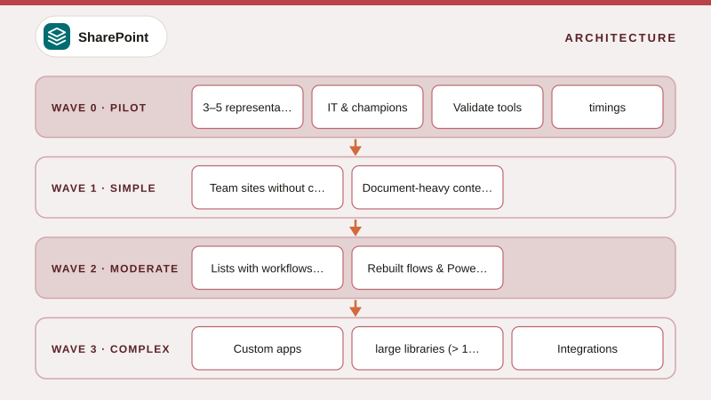

01
SharePoint Migration Strategy – Assess, Plan, Migrate, Validate, Adopt
A complete migration framework for SharePoint and file content, covering goals and scope, lift-and-shift vs restructure, wave planning, tool selection, identity and permissions, customizations, communication, cut-over models and success metrics, with a phase diagram and RACI.